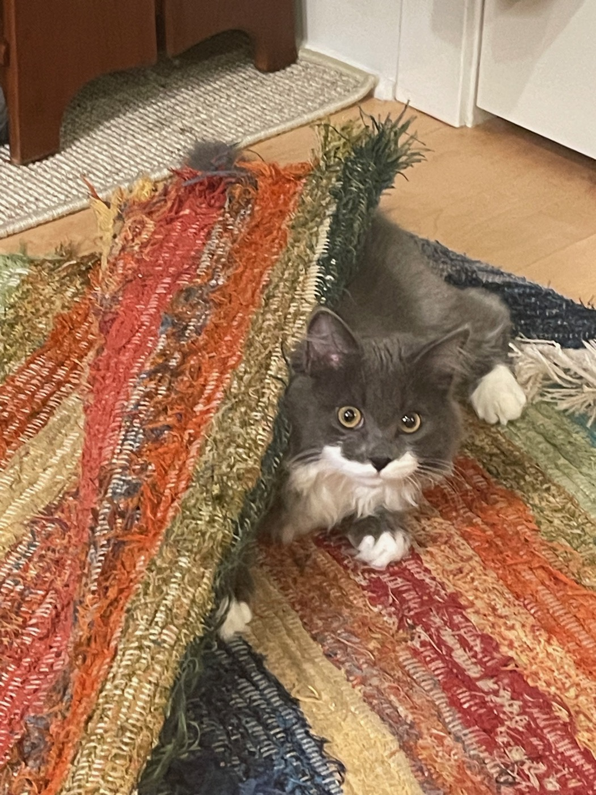
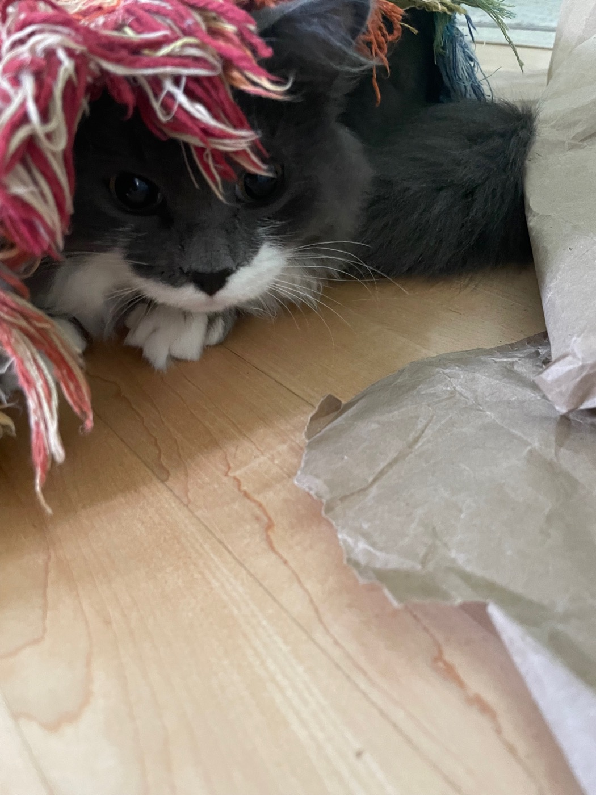
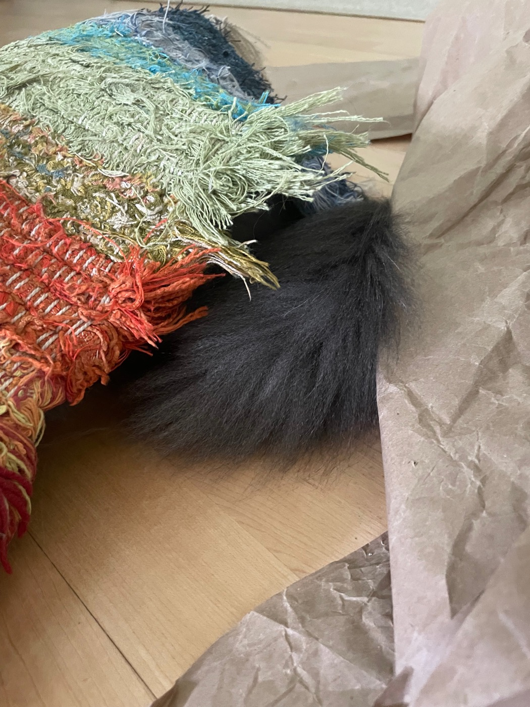

The rag rug by the door is, officially, floor covering. Unofficially it is where chases in this house end — and on busy afternoons, it develops lumps.
The chase itself is a classic of the genre: Zeta pursues, Entropy runs. His closing move is often the same. He makes for the rug, lifts an edge with his head and paws, keeps going until covered, and stops — no longer a cat being chased, just furniture. The eyes stay out, because the whole exercise depends on knowing exactly where your pursuer is.

Zeta does not dig him out. That would be crude, and the rules do not allow it. Instead the game changes from tag to siege: she takes up her position directly on top of the hiding spot and waits. Both parties understand the arrangement. He is safe for exactly as long as he remains a lump — and the moment he concludes that the rug was not, in fact, the best available hiding place and makes a run for it, she pounces.

Commitment to the role
A siege rewards patience, and the lump takes its job seriously. There is no wiggling, no premature exit, no breaking of character. A cat under the rug stays flat, stays silent, and wears whatever the rug decides to put on him — up to and including a full fringe wig.

The flaw in the system
There is exactly one weakness in the defense, and it follows him everywhere. Some afternoons the hallway is quiet, the rug lies flat and innocent, and no siege appears to be under way at all — except for one magnificent gray tail, entirely outside the rug, keeping its own counsel.

We do not mention the tail. Mentioning the tail would end the game, and the game is one of the best things the house has going. Nobody is under the rug. Nobody has ever been under the rug.